Firmware for a small ESP32‑C3‑MINI‑1U board that puts serial devices on Wi‑Fi. Two UART lines are relayed to UDP ports or TCP clients as whole protocol frames (Kogger SBP KP1/KP2, u‑blox UBX, MAVLink 1/2). The module itself is a Kogger SBP device (board ID 87), configured and monitored by any SBP host from either port (X1 or X2) or over the network, found by KoggerApp's usual device search, and updated from a wire or the network with the exchange KoggerApp uses for Kogger devices. It reports what it sees on each port. It works as a Wi‑Fi station or runs its own access point with a DHCP server. An optional IP bridge (SLIP + NAT) gives a Linux host without Wi‑Fi an IP route through the module.
ID_VERSION to address 0); replies go back on the request's channelA boat head unit, a Linux display computer that talks Kogger SBP, has no usable Wi‑Fi. The module sits on one of its UARTs at 3 Mbaud, joins the boat's access point and relays the SBP, MAVLink and UBX traffic between the head unit and the boat's equipment over UDP. On the same port the module answers its own SBP address 87 and reports its Wi‑Fi state.
In the access‑point role the same board is the boat‑side end: it bridges a sonar or autopilot UART to phones and laptops on its own network.
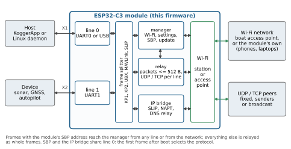
| Module | ESP32‑C3‑MINI‑1U: RISC‑V single core up to 160 MHz, 4 MB flash, U.FL antenna connector |
| Wi‑Fi | IEEE 802.11 b/g/n, 2.4 GHz, 20/40 MHz; Espressif LR mode optional |
| Transmit power | 2–20 dBm limit, applied by the driver in 11 steps |
| Roles | station (default) or access point: open, WPA2, WPA2/WPA3; channels 1–11; 1–10 clients |
| Serial lines | X1 = UART0 (host port), X2 = UART1; 9600–5 000 000 baud, 8N1; default 921600 on both; optional native USB Serial/JTAG build for line 0 |
| Serial throughput | baud / 10 bytes per second each way: 92 KB/s at 921600, 200 KB/s at 2 Mbaud, 400 KB/s at 4 Mbaud |
| Relay | KP1, KP2, UBX, MAVLink 1/2 (392 messages); frames ≤ 4096 B; packets ≤ 512 B; 24‑packet pool |
| Control protocol | Kogger SBP (KP1): ID_WIFI 0x57, ID_WIFI_NET 0x58, common device IDs; IP bridge text commands over SLIP |
| Firmware update | over SBP, from a wire or the network (0.17); two 1.875 MiB slots; confirmation after 60 s, rollback at 180 s |
| Firmware image | 0.93 MB (47 % of a slot), ESP‑IDF 5.5.5 |
| Board | 20 × 30 mm, 4 layers FR4 1.2 mm, ENIG; two JST GH 4‑pin connectors; KiCad 10 project in hardware/ |
| Supply | 4.5–24 V on X1 pin 4 (reverse‑polarity diode, TI LMZM23601 3.3 V / 1 A module); consumption not measured |
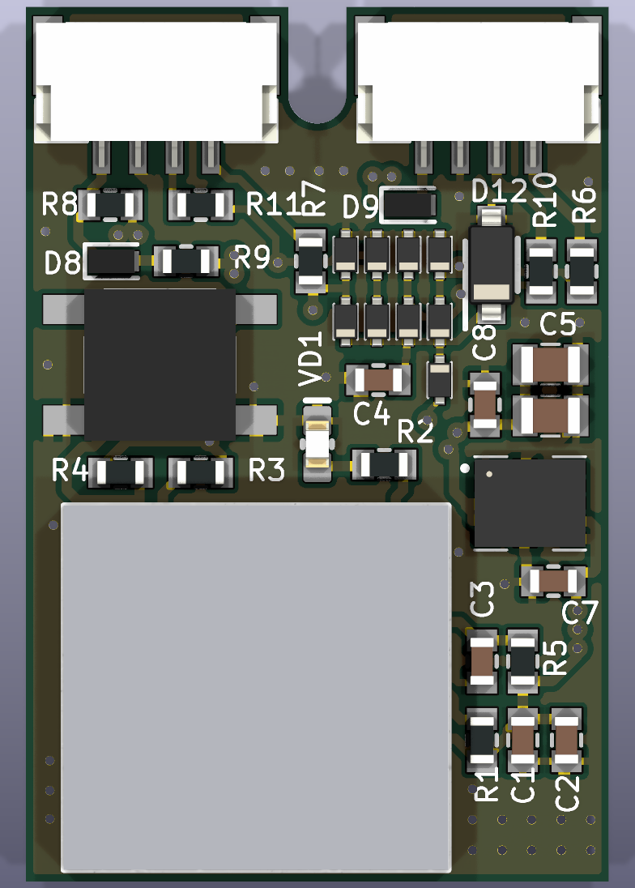
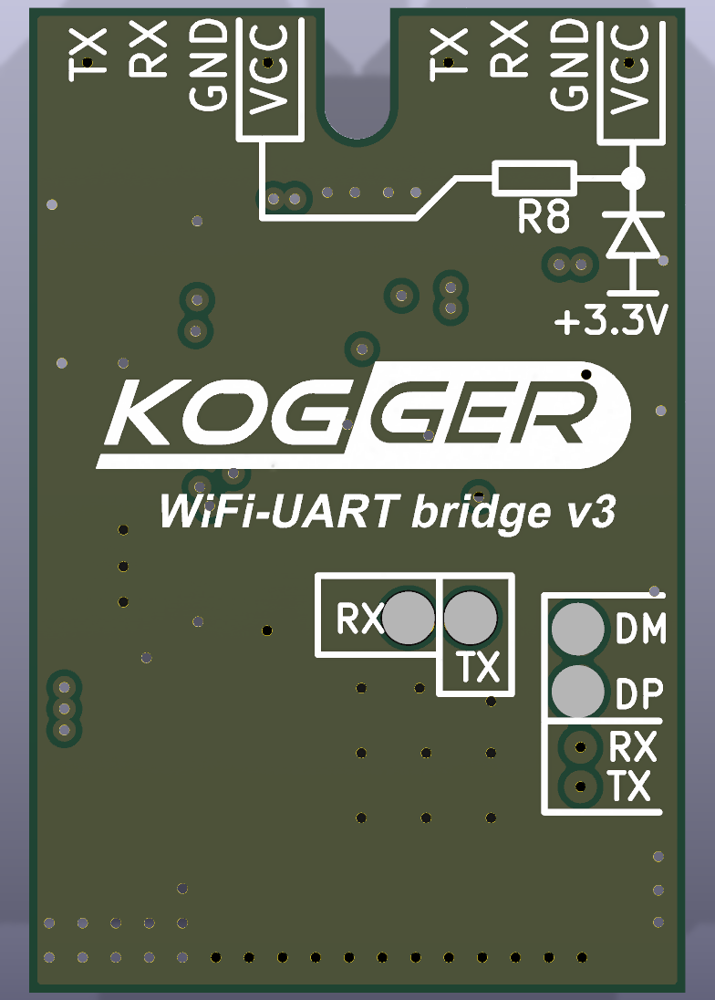
| Pin | X1 (line 0, host port, flashing) | X2 (line 1) |
|---|---|---|
| 1 | TX of the module, 150 Ω series — GPIO21 (U0TXD) | TX of the module, 150 Ω series — GPIO5 |
| 2 | RX of the module, 1 kΩ series — GPIO20 (U0RXD) | RX of the module, 1 kΩ series — GPIO4 |
| 3 | GND | GND |
| 4 | VCC input through the Schottky diode D9 (reverse‑polarity protection) | VCC_X2: VCC through R8 (0 Ω, fitted), or ≈ 3 V from +3.3 V through R9 + D8 without R8 |
| Regulator | TI LMZM23601V3: 4–36 V in, 3.3 V out, up to 1 A |
| VCC range | 4.5–24 V, rated (not measured): regulator minimum plus the diode drop; below the 25 V input capacitors |
| Consumption | not measured; plan for ESP32‑C3 Wi‑Fi transmit peaks |
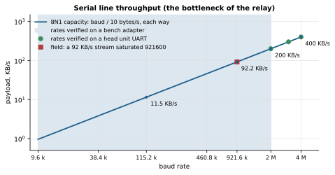
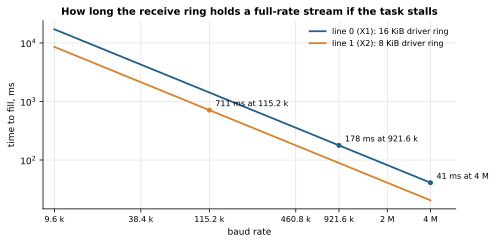
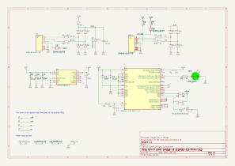
Figure 5. Schematic of the reference board (KiCad project in hardware/).
| References | Qty | Value | Manufacturer part number | Manufacturer |
|---|---|---|---|---|
| C1, C7 | 2 | 10uF | CL10A106MO8NQNC | Samsung Electro-Mechanics |
| C2, C4, C8 | 3 | 0.1uF | CL10B104JB8NNNC | Samsung Electro-Mechanics |
| C3 | 1 | 1uF | CL10A105KB8NNNC | Samsung Electro-Mechanics |
| C5, C6 | 2 | 22uF | CL21A226MAYNNNE | Samsung Electro-Mechanics |
| D1, D3, D4, D6, D7, D10, D11, D13, D14 | 9 | BAS3005B-02V | BAS3005B-02VH6327 | Infineon Technologies |
| D8, D9 | 2 | SDM4A40EP3 | SDM4A40EP3-7B | Diodes Incorporated |
| D12 | 1 | MMSZ5226B | SZMMSZ5226BT1G | onsemi |
| R1, R3, R4, R5 | 4 | 10k | ERJ-3EKF1002V | Panasonic |
| R2, R10, R11 | 3 | 1k | ERJ-3EKF1001V | Panasonic |
| R6, R7 | 2 | 150 | ERJ-3EKF1500V | Panasonic |
| R8, R9 | 2 | 0 | ERJ-3GEY0R00V | Panasonic |
| SB1 | 1 | PTS525SM15SMTR2 | PTS525SM15SMTR2 LFS | C&K |
| U1 | 1 | ESP32-C3-MINI-1U | ESP32-C3-MINI-1U | Espressif Systems |
| U2 | 1 | LMZM23601V3 | LMZM23601V3SILR | Texas Instruments |
| VD1 | 1 | LED green | FYLS-0603UGC | — |
| X1, X2 | 2 | SM04B-GHS-TB | SM04B-GHS-TB(LF)(SN) | JST |
Test pads TP1–TP4 are not assembled. Fabrication: 4 layers, FR4 1.2 mm, 18 µm copper, ENIG, green solder mask,
white silkscreen; Gerbers, drill, pick‑and‑place: hardware/outputs/.
KoggerBridge; passwords are never read back.headunit-wifi (build option).| Default | Station role | Access‑point role |
|---|---|---|
| Line 0 (X1) | UDP to 10.0.0.10:14444 | UDP, senders, port 14444 |
| Line 1 (X2) | UDP to 10.0.0.10:14445 | UDP, senders, port 14445 |
| Module SBP address while a line relays | 87 | 88 |
| Wi‑Fi network | KoggerBridge / KoggerBridge (public: change it): joined as a station, own network as an access point; WPA2, channel 6, 4 clients | |
| Address and DHCP | 10.0.0.10/24, pool 10.0.0.11–10.0.0.30, lease 120 min, no gateway or DNS offered | |
| Radio | 20 dBm, b/g/n, 20 MHz, no power save | |
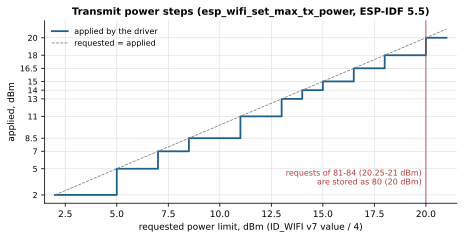
The module is controlled over Kogger SBP on either serial port (8N1, 9600–5 000 000 baud; 921600 on both by
default), in either role, and over the network on the UDP port of any open line. X1 also understands SLIP frames of the
IP bridge; the first valid frame after boot selects SBP or SLIP on X1 until the next reboot, and while line 0 relays to
the network, X1 speaks only SBP. All multi‑byte fields are little‑endian. Full text: docs/SBP_WIFI.md.
| Offset | Field |
|---|---|
| 0–1 | sync BB 55 |
| 2 | route: device address. The module answers its own address: 87 (station) / 88 (AP), or the one set with ID_WIFI_NET v6 (1–254). Discovery: a GETTING ID_VERSION to 0 or 255 is answered from the own address and relayed as well |
| 3 | mode = type | version<<3 | mark<<6 | resp<<7; type 1 CONTENT, 2 SETTING, 3 GETTING; version 0–7 |
| 4 | id: command (0x57 ID_WIFI, 0x58 ID_WIFI_NET, common IDs below) |
| 5 | len: payload length, 0–255 |
| 6… | payload |
| end | ck1 ck2: Fletcher‑8 over route … payload: c1 = c2 = 0; for b: c1 = (c1 + b) & 255; c2 = (c2 + c1) & 255 |
ID_WIFI v3 → CONTENT v0). SETTING (sent with resp = 1) → acknowledgement CONTENT vN, resp = 1, payload
{code, ck1, ck2}, where ck1 ck2 is the checksum of the acknowledged frame. Codes: 1 OK, 3 ERR_PAYLOAD,
5 ERR_VERSION, 6 ERR_TYPE, 7 ERR_KEY, 8 ERR_RUNTIME.U4 0xC96B5D4A (bytes 4A 5D 6B C9).
It guards against accidents, not attackers.| ID | GETTING | SETTING |
|---|---|---|
ID_UART 0x18 | v0 {KEY, 1, U4 baud of the asking port}; v1 {KEY, 1, own address}; v2 {KEY, own address} | v0 {KEY, U1 1, U4 baud 9600–5 000 000} for the asking port: answered at the old rate, then switched and saved (0.15; provisional up to 0.14); v1/v2 own address 1–254, saved |
ID_VERSION 0x20 | v0 34 bytes ([1] board 87, [14..17] serial); v1 12‑byte UID; v2 9 bytes {bootMode, 0, 87, 0, 0, U2 0, fwMinor, fwMajor} | — |
ID_MARK 0x21 | v0 {U1 mark} | v0 {KEY}: sets the mark bit (cleared by a reboot and by ID_BOOT v0) |
ID_FLASH 0x23 | — | {KEY}: v0 confirm and save the rates of both ports and the report period; v1 reload the saved period; v2 erase |
ID_BOOT 0x24 | — | v0 {KEY}: reboot after the 5 s update window; v1 {KEY}: check the received image and boot it |
ID_UPDATE 0x25 | — | v0 {U2 chunk number, ≤ 253 data bytes}; from a wire or the network (0.17) |
ID_WIFI = 0x57| Ver. | GETTING → CONTENT | SETTING |
|---|---|---|
| v0 | state, 39 bytes + SSID (below); also sent by itself on every change | — (ERR_TYPE) |
| v1 | link report, 27 bytes: U1 state, S1 RSSI, U4 rx B/s, U4 tx B/s, U4 rx total, U4 tx total, U4 uptime s, U1 last reset reason (esp_reset_reason_t: 1 power‑on, 3 software, 4 panic, 6 task watchdog, 9 brownout), U4 requests dropped for a full queue (0.14, stays 0); sent periodically | {U2 period ms}: 0 off, 100–60000 |
| v2 | scan: one CONTENT per network {U1 index, U1 total, S1 RSSI, U1 channel, U1 security, U1 flags, BSSID[6], U1 len, SSID}; none: {0, 0} | start a scan (OK); ERR_RUNTIME while connecting or in the AP role |
| v3 | state: answered with CONTENT v0 | connect {U1 flags bit0 save, U1 len, SSID 1–32, U1 len, password 0–64} |
| v4 | saved networks {U1 index, U1 total, U1 len, SSID}; passwords never | {0} disconnect, auto off; {1} auto on; {2, U1 len, SSID} forget one; {3} forget all |
| v5 | relay of line 0, 10 bytes | {U1 mode 0 off/1 UDP/2 TCP, U1 own address 1–254, ip[4], U2 peer port, U2 own port (0 = peer port)}; ip 0.0.0.0 answers senders, 255.255.255.255 broadcasts |
| v6 | relay statistics, 47 bytes: U1 state, ip[4], U2 port, U4 ×10 (up frames, bytes, packets, drops; down packets, bytes, frames, drops; frames for the module; TCP connects) | — (ERR_TYPE) |
| v7 | radio, 8 bytes: the 4 settings, then power in effect, negotiated mode (0 LR, 1 11b, 2 11g, 4 HT20, 5 HT40, 0xFF none), protocols and bandwidth set in the driver | {U1 power 0.25 dBm 8–80, U1 protocols 0x01 b/0x03 b/g/0x07 b/g/n/ 0x08 LR/0x0F b/g/n+LR, U1 bandwidth 1 = 20/2 = 40 MHz, U1 power save 0/1/2} |
| Offset | CONTENT v0 (state) |
|---|---|
| 0 | U1 state: 0 IDLE, 1 SEARCHING, 2 CONNECTING, 3 CONNECTED, 4 AP |
| 1 | U1 flags: bit0 auto‑connect, bit1 scan running, bit2 current network saved |
| 2 / 3 / 4 | S1 RSSI dBm / U1 channel / U1 security (0 open, 1 WEP, 2 WPA, 3 WPA2, 4 WPA/WPA2, 5 WPA3, 6 WPA2/WPA3, 7 enterprise, 8 OWE) |
| 5 / 6 / 7 | U1 last disconnect reason (wifi_err_reason_t) / U1 category (0 none, 1 no AP, 2 auth, 3 assoc, 4 lost, 5 other) / U1 AP clients |
| 8–13 | BSSID |
| 14–29 | IP, netmask, gateway, DNS (4 bytes each) |
| 30–37 | U4 receive, U4 transmit traffic, bytes per second |
| 38 | U1 SSID length, then the SSID (up to 32 bytes) |
ID_WIFI_SURVEY = 0x59 (0.16)How busy each channel is, to put an access point on a quiet one. SETTING v0 {KEY, U2 dwell ms, U2 channel
mask} sweeps the channels (1–11, 50–1000 ms each, 120 by default) and answers OK at once;
GETTING v0 repeats the last results. CONTENT v0, one per channel, 16 bytes: index, total,
channel, dwell, busy per mille (air time of the Wi-Fi frames heard, without gaps or acknowledgements: a floor),
frames, transmitters, strongest RSSI, noise floor, flags (own channel, usable by an access point, noise not to be
trusted) and how much of the busy figure is the module's own network. GETTING v1 {U2 window ms} (0.18)
reports the link rate: the PHY rates the other end of the link transmits at, counted over a 200 ms sniffer
window, at most once a second (11b, 11g and 11n decoded to kbit/s). Since 0.19 every rate carries a timing bound
from consecutive frames, which proves an LR rate of 500 kbit/s when it reaches 300 kbit/s (LR has only 250 and 500).
ID_WIFI_NET = 0x58 (every SETTING starts with the key)| Ver. | GETTING → CONTENT | SETTING (after the key) |
|---|---|---|
| v0 | role {U1 at next boot, U1 now}: 0 station, 1 AP | {U1 role, U1 flags: bit0 reboot now, bit1 forget lines and own address} |
| v1 | access point {U1 channel 1–11, U1 hidden, U1 max clients 1–10, U1 security 0 open/1 WPA2/2 WPA2+WPA3, U1 len, SSID, U1 0} | the same + {U1 len, password 8–63}; empty password with security on keeps the old one |
| v2 | address, 20 bytes {ip[4], mask[4], U1 DHCP, pool start[4], pool end[4], U2 lease min, U1 offer bit0 gateway, bit1 DNS} | the same 20 bytes |
| v3 | line, 18 bytes {U1 line, U1 mode 0 off/1 UDP/2 TCP, U1 dest 0 fixed/1 senders/2 broadcast, ip[4], U2 rport, U2 lport, U4 baud (running), S1 TX pin, S1 RX pin, U1 uart}; no payload: both lines | the first 17 bytes; baud sets the other line (either from the network), saved at once; ignored for the asking port's own line; pins to line 1 only |
| v4 | line statistics, 57 bytes {U1 line, U1 state, ip[4], U2 peer port, U1 senders, U4 ×12: up frames, bytes, packets, drops; down packets, bytes, frames, drops; frames for the module; TCP connects; UART RX overflows; UART TX drops} | — |
| v5 | AP clients {U1 index, U1 total, MAC[6], ip[4], S1 RSSI} each; none {0, 0} | — |
| v6 | own address {U1} | {U1 address 1–254}, acknowledged from the old address |
| v7 | port information: {} both ports, {port}, {port, page}. Page 0, 116 bytes: flags (UART, bridging, asked through this port, gets reports, SLIP, provisional up to 0.14, USB), rate now and saved, connected (nothing, unreadable, SBP host, SBP devices, both, MAVLink, u‑blox, IP bridge), bytes, units by protocol both ways, SBP requests/CONTENT, overflows. Page 1: devices heard (SBP address, board, firmware, serial; MAVLink system, type, autopilot). Page 2: network peers of the line | — (ERR_TYPE) |
| Step | Host sends | Module answers |
|---|---|---|
| 1 | ID_BOOT v0 {KEY} | OK; update window 5 s; ID_VERSION v2 bootMode = 1; no chunk → reboot |
| 2 | ID_UPDATE v0 {U2 n, data} for n = 1, 2, … | CONTENT {U2 lastNumMsg, U4 lastOffset, U1 type, U1 rcvNumMsg}: type 0 accepted, 2 reposition to lastNumMsg + 1, 3 no session, 4 foreign image, 5 too big, 6 flash error |
| 3 | ID_BOOT v1 {KEY} | OK and reboot if the image checks out (chip, project, SHA‑256); ERR_RUNTIME if it does not or the transfer was abandoned; OK without reboot if nothing was received |
| 4 | any frame to the module | the new image confirms itself after ≥ 60 s of uptime with host frames; else rollback at 180 s |
Generated with host/sbpframe.py; tools/make_datasheet.py re‑checks every checksum below.
| What | Bytes (hex) |
|---|---|
| Find the module (discovery): GETTING ID_VERSION v2 to address 0 | BB 55 00 13 20 00 33 79answered from the module's own address (87 station, 88 AP) and relayed on to a device behind it; KoggerApp sends this when a port opens |
| Read identity: GETTING ID_VERSION v0 | BB 55 57 03 20 00 7A A5answer: CONTENT v0, 34 bytes, board 87 at [1] |
| Read Wi-Fi state: GETTING ID_WIFI v0 | BB 55 57 03 57 00 B1 13answer: CONTENT v0 (39 bytes + SSID) |
| Which port am I on, what is on each: GETTING ID_WIFI_NET v7 | BB 55 57 3B 58 00 EA BDanswer: CONTENT v7 page 0 (116 bytes) for X1 and for X2; flags bit2 marks the port the request came through |
| Report every 500 ms: SETTING ID_WIFI v1 {U2 500} | BB 55 57 8A 57 02 F4 01 2F 07 |
| its acknowledgement: CONTENT v1 resp {OK, ck1, ck2} | BB 55 57 89 57 03 01 2F 07 71 BEck1 ck2 = checksum of the SETTING frame above |
| This port to 2 Mbaud: SETTING ID_UART v0 {KEY, 1, U4 2000000} | BB 55 57 82 18 09 4A 5D 6B C9 01 80 84 1E 00 F8 D7acknowledged at the old rate, then switched; saved when the next request arrives at 2 Mbaud, otherwise back after 10 s |
| X2 to 57600 from X1: SETTING ID_WIFI_NET v3 (line 1 record) | BB 55 57 9A 58 15 4A 5D 6B C9 01 01 01 00 00 00 00 6D 38 6D 38 00 E1 00 00 05 04 70 DBthe other port: saved at once |
| Join a network: SETTING ID_WIFI v3 {save, "Boat-AP", "secret12"} | BB 55 57 9A 57 12 01 07 42 6F 61 74 2D 41 50 08 73 65 63 72 65 74 31 32 97 54OK at once, progress in CONTENT v0 |
| Radio: SETTING ID_WIFI v7 {15 dBm, b/g/n, 20 MHz, no power save} | BB 55 57 BA 57 04 3C 07 01 00 B0 F3 |
| Relay line 0 over UDP to 10.0.0.10:14444, own address 87: SETTING ID_WIFI v5 | BB 55 57 AA 57 0A 01 57 0A 00 00 0A 6C 38 6C 38 16 E9the address 87 is saved |
| AP name "Boat-1", WPA2, channel 6, 4 clients, password kept: SETTING ID_WIFI_NET v1 | BB 55 57 8A 58 10 4A 5D 6B C9 06 00 04 01 06 42 6F 61 74 2D 31 00 19 1B |
| Role access point, reboot now: SETTING ID_WIFI_NET v0 | BB 55 57 82 58 06 4A 5D 6B C9 01 01 14 79after the reboot the module answers its saved address, here 87 (saved with ID_WIFI v5 above); with nothing saved, or with flags 0x03 (forget lines and address), the access point default 88 |
| Periodic report from the module: CONTENT ID_WIFI v1 (23 bytes) | BB 55 57 09 57 17 03 CC DB 16 00 00 62 07 00 00 E0 FD 1C 00 40 EF 07 00 10 0E 00 00 01 45 0ECONNECTED, RSSI -52 dBm, 5851/1890 B/s, totals, uptime 3600 s, last reset: power-on |
| Update, step 1: SETTING ID_BOOT v0 {KEY} | BB 55 57 82 24 04 4A 5D 6B C9 DC 10opens the 5 s update window |
| Update, step 2: SETTING ID_UPDATE v0 {U2 1, 4 data bytes} | BB 55 57 82 25 06 01 00 E9 05 02 2F 24 36chunks up to 253 data bytes, numbered from 1; the first bytes of an ESP-IDF image are E9 .. |
| Update, step 3: SETTING ID_BOOT v1 {KEY} | BB 55 57 8A 24 04 4A 5D 6B C9 E4 48checks the image, answers OK and reboots |
Frame C0 | SLIP‑escaped(type, data, CRC‑16/CCITT‑FALSE big‑endian) | C0; type 0x01 carries one IPv4
packet, type 0x02 one text line <tag> <COMMAND> [key=value …]. Commands: VER, STATUS, SCAN, CONNECT,
DISCONNECT, AUTO, LIST, FORGET, STATS, BAUD, PROTO, RADIO, RELAY, REBOOT; events start with *.
Example, text 1 VER: C0 02 31 20 56 45 52 70 41 C0. Details: docs/PROTOCOL.md.
| Frame | Start | Check |
|---|---|---|
| Kogger KP1 | BB 55 route mode id len | Fletcher‑8 |
| Kogger KP2 | CC 55 U2(total), ≤ 4096 B | Fletcher‑8 |
| u‑blox UBX | B5 62 class id U2(len), ≤ 4096 B | Fletcher‑8 |
| MAVLink 1 / 2 | FE / FD, known message id and length | X.25 + CRC_EXTRA |
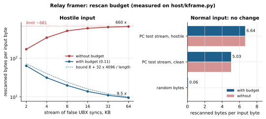
ID_BOOT v0 → ID_UPDATE chunks (≤ 253 B, strictly numbered) → ID_BOOT v1, the exchange
KoggerApp uses for Kogger bootloaders. Only the inactive slot is written; the image (chip, project, SHA‑256) is checked
before the switch. The new image confirms itself after 60 s of work with host frames; otherwise the bootloader rolls
back after 180 s. Updates from the network are refused. File: KoggerWiFi_<version>.ufww
(tools/make_update.py); host tool: tools/sbp_update.py.
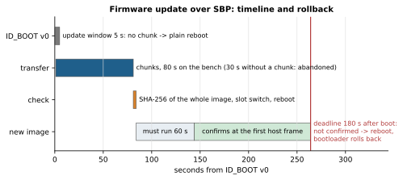
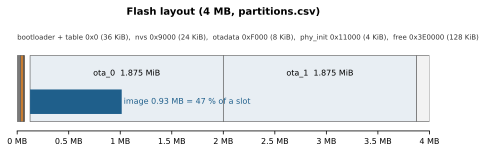
partitions.csv.| Update window | 5 s after ID_BOOT v0 |
| Update stall | 30 s |
| Confirmation | ≥ 60 s uptime + host frame, deadline 180 s |
| Network search | every 15 s |
| Supervision | connect 30 s, scan 15 s, lost association 2 s |
| Relay silence flush | 10–20 ms UART, 200 ms network |
| Relay senders | ≤ 4, forgotten after 60 s |
| TCP | connect 3 s, send 5 s, retry 2 s |
| Link report | 1000 ms (100–60000, or off) |
| Task watchdog | 5 s, panic → reboot |
| BOOT resets | held 5 s: port rates; 10 s: factory settings |
| Line 0 receive | 16 KiB driver ring |
| Line 0 transmit | 12 KiB whole‑unit ring (1 KiB reserve), no driver ring |
| Line 1 receive / transmit | 8 KiB / 8 KiB (1 KiB reserve) |
| Packet pool | 24 × 512 B, both lines |
| Frame candidate | 4096 B per direction |
| lwIP UDP queue | 16 datagrams |
| DHCP leases | 10 |
| Scan results | 32 networks |
| Rescan budget | 8 B per input byte, saved up to 128 KiB |
| Option | Default | Meaning |
|---|---|---|
WB_LINK | USB Serial/JTAG | host link; sdkconfig.defaults.uart selects UART0 at 921600 |
WB_LINK_UART_TX / RX / RTS / CTS | 21 / 20 / −1 / −1 | host link pins; −1 = no flow control |
WB_BRIDGE_IP / WB_HOST_IP | 10.99.0.1 / 10.99.0.2 | IP bridge point‑to‑point addresses |
WB_OTA_CONFIRM_S | 180 | rollback deadline, 90–3600 s |
WB_HOSTNAME | headunit-wifi | DHCP hostname of the station |
WB_FACTORY_SSID / PASS | KoggerBridge | factory network in both roles (public) |
| Test | Conditions | Result |
|---|---|---|
| Ping through the IP bridge and NAPT | bench, 921600 baud, 30 pings | 56 B: 4.9 / 6.1 / 17.4 ms; 1400 B: 40.4 / 41.4 / 46.3 ms (min/avg/max), data intact |
| Firmware update | bench, 921600 baud | 885 120 B in 80 s (10.8 KB/s); lost chunk recovered |
| Firmware update | field, saturated 921600 port | 929 KB in 226 s, 5/5 checks |
| Firmware update 0.10 → 0.11 | field, 3 Mbaud | 932 512 B in 50 s (18.1 KB/s), 7/7 checks |
| Firmware update 0.11 → 0.12 | bench, 921600, AP role | 938 800 B in 84 s (10.9 KB/s), 7/7 checks |
| Relay to a boat network | field, UDP | ~270 datagrams, ~890 frames in 8 s, no loss |
| Auto‑connect after power‑up | bench | connected after 7.6 s without commands |
| Baud switching | bench adapter / head unit | 9600 … 2 000 000: 28/28 / 2, 3, 4 Mbaud |
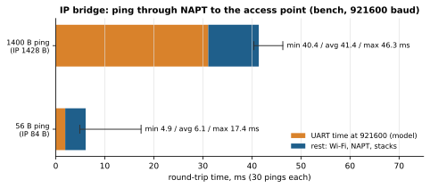
Verified on hardware (0.1–0.12): SBP device checks, baud switching, IP bridge through NAT, station auto‑connect, firmware update, recovery from a lost chunk, a corrupted image refused, relay to a boat network over UDP; 0.11.0 installed in the field over SBP (7/7 checks); 0.12.0 port rules on a bench module in both roles (29/29); 0.12.0 on the head unit's module (7/7) with a sonar on the access point's X2 seen over an LR‑only link. Not yet verified on hardware: the 0.11 transmit fix under a saturated 921600 port; rollback of an unconfirmed image and an abandoned transfer; a host on X2; the native USB variant; the IP bridge daemon on a Linux host; LR range and throughput over distance.
SECURITY.md).Documentation: README.md, docs/HARDWARE.md, docs/SBP_WIFI.md, docs/NETWORK.md, docs/RELAY.md, docs/UPDATE.md, docs/PROTOCOL.md, docs/PARAMETERS.md, docs/DESIGN.md, docs/BUILD_AND_TEST.md. Third‑party notices: THIRD_PARTY.md. This datasheet is generated from docs/datasheet/datasheet.html by tools/make_datasheet.py.